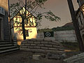

Friday, June 17 2005
For the last couple of months a team at Valve has been working away on Day of Defeat: Source. We'd like to give people some insight into what we've been doing during this time.
The initial plan following the launch of Half-Life 2 was to get a near direct port of the existing Day of Defeat up and running and release it to the community. After this release, the plan was to take the approach of iterating on the art and gameplay of Day of Defeat through the end of the year. We finished this porting work a few months ago, released this version to a small group of beta testers, and then took stock of where we were. We didn't feel like the game was good enough from a visual perspective to release.

We decided to rework all of the content of Day of Defeat: Source before the full public release, hoping that people would be happier waiting for the product to ship while we gave DoD the attention it deserved. We hope our assumptions turn out to be accurate.
Here is the first screenshot from dod_flash, which is the first map that has been given this complete art pass. We'll have more things to share over the next few weeks.
In other news, our friends at Softimage are having a modeling contest and offering $25,000 in prizes for the most original and compelling characters produced with the XSI Mod Tool. Submissions will be judged in-game on specific visual and animation criteria. For more, head to the contest�s
offical page.
{kind=link}